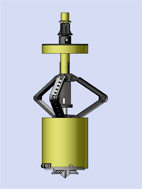
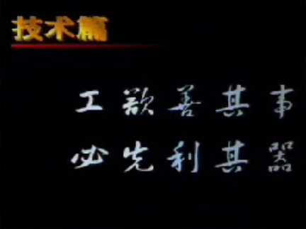
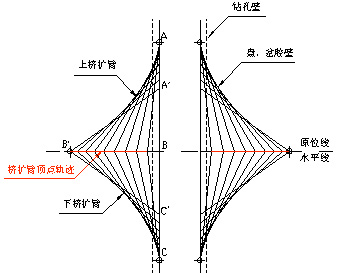

<!DOCTYPE html>
<html lang="en">
<head>
    <meta charset="UTF-8">
    <title>product</title>
    <link rel="stylesheet" href="css/style.css">
    <link rel="stylesheet" href="css/base.css">
    <link rel="stylesheet" href="css/product.css">
</head>
<body>
<!--header-->
<div class="header">
    <!--顶部-->
    <div class="top">
        <div class="inner">
            <ul>
                <li><i></i><a href="javascript:;">设为首页</a></li>
                <li><i></i><a href="javascript:;">收藏本站</a></li>
                <li><i></i><a href="login.html">登录</a></li>
                <li><i></i><a href="javascript:;">注册</a></li>
                <li><i></i><a href="javascript:;">企业邮箱</a></li>
            </ul>
            <span>English</span>
        </div>
    </div>
    <!--中部-->
    <div class="mid">
        <div class="inner">
            <div class="logo">
                
                <h3>中阔地基</h3>
            </div>
            <form action="">
                <input type="text" placeholder="请输入关键字">
            </form>
        </div>
    </div>
    <!--底部-->
    <div class="nav">
        <div class="inner">
            <ol>
                <li><a href="index.html">首　页</a></li>
                <li><a href="about.html">关于我们</a></li>
                <li><a href="tech.html">技术中心</a></li>
                <li class="active"><a href="#">设备及产品</a></li>
                <li><a href="success.html">成功案例</a></li>
                <li><a href="talent.html">招贤纳士</a></li>
                <li><a href="news.html">新闻中心</a></li>
                <li><a href="contact.html">联系我们</a></li>
            </ol>
        </div>
    </div>
</div>
<!--banner-->
<div class="banner"></div>
<div class="main">
    <div class="inner clearfix">
        <!--左边-->
        <div class="mainLeft">
            <div class="top">
                <ul>
                    <li><h3>设备及产品</h3></li>
                    <li>三岔双向挤扩灌注桩</li>
                    <li>旋挖挤扩钻机</li>
                    <li>拧入式挤土排土装置</li>
                    <li>地基施工检测</li>
                </ul>
            </div>
            <div class="pic">
                
                <span>挤扩动作模拟</span>
            </div>
        </div>
        <!--右边-->
        <div class="mainRight">
            <div class="cardList">
                <h3>三岔双向挤扩灌注桩</h3>
                <div class="top clearfix">
                    
                    <h4>施工机械</h4>
                    <p> DX桩按不同成直孔工艺可结合采用潜水钻机、
                        正循环钻机、冲击钻机、螺旋钻机、钻斗钻机
                        (旋挖钻机)、全套管贝诺特钻机及沉管机等成
                        孔钻机。
                    </p>
                    <h4 style="padding-top:25px;">工作原理</h4>
                    <p>DX挤扩装置由机头、联接器、液压站控制系统
                        及车载系统等组成。机头由双向液压油缸装置
                        、三岔挤扩弓压臂、液压旋转装置、压力传感
                        器等组成。联接器包括油管和解力装置，起到
                        柔性连接传递的作用。
                    </p>
                </div>
                <div class="mid clearfix">
                    <p>DX挤扩装置设计出了液压双缸双向相对位移的运动形式，工作时，
                        挤扩臂铰点只作水平运动而无上下运动，使挤扩臂上下土体均受挤压，
                        可保证在砂层或其他土层在挤扩后不掉或少掉土。
                    </p>
                    
                    <p class="fots">
                        图示1-1 DX挤扩装置的运动轨迹
                        <br><br>
                        由图示1-1可见，DX挤扩装置的上臂AB，下臂BC的三点运动轨迹如下：<br>
                        A点：|x=0，y=↓|；<br>
                        B点：|x=→，y=0 |；<br>
                        C点：|x=0，y=↑|，且A点|y↓|=C点|y↑|。<br>
                        B点只有水平方向运动，且ABC所形成的包络线均匀<br>连续上下对称，
                        受力总是平衡的，使挤扩过程中不<br>掉土或少掉土，很好的完成侧面形腔。
                    </p>
                </div>
                <div class="bot clearfix">
                    <p>
                        DX挤扩装置结构为双缸双向相对位移运动，挤扩时，外活塞杆逐渐外伸推动上臂张开挤扩，
                        因上臂外伸距离短，力矩较小；同时，内活塞杆逐渐受拉，保护力矩逐渐增大，挤扩力矩逐渐减小
                        ，拉动下挤扩臂，使其逐渐张开挤扩。DX挤扩装置三对等角挤扩
                        臂对活塞杆起支撑稳固作用，当与不均匀土体及硬物顶抗时，内活塞杆不易弯曲受损。
                    </p>
                    
                    <span>图示1-2 DX挤扩装置活塞杆力矩</span>
                </div>
            </div>
        </div>
    </div>
</div>
<!--footer-->
<div class="footer">
    <div class="inner">
        <ul>
            <li><a href="javascript:;">联系我们</a></li>
            <li><a href="javascript:;">常见问题</a></li>
            <li><a href="javascript:;">诚邀加盟</a></li>
            <li><a href="javascript:;">站点地图</a></li>
            <li><a href="javascript:;">法律声明</a></li>
        </ul>
        <p>
            地址：北京市海淀区兰靛厂东路2号院金源时代商务中心2号楼A座7E  邮编：100097<br>
            电话：010-88865138 88871397  传真：010-88865159  Email：dx@zkdx.com<br>
            版权所有 北京中阔地基基础技术有限公司 京ICP备05058169号<br>
            技术支持：易品互动
        </p>
    </div>
</div>
</body>
</html>